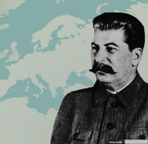

A dichotomy is defined as a split between two entities that are opposites of one another. After the defeat of fascism and Nazism in World War II, supporters of liberalism and communism started to compete for the hearts and minds of people around the globe.
Many of the world’s nations began to ally themselves with either the United States, the world’s most powerful liberal democracy, or the Soviet Union, the first nation to put communism into practice. The resulting dichotomy would shape international relations for most of the second half of the twentieth century.
Through most of that period, an ideological competition played out in a variety of arenas—social, scientific, economic, and military. While the world’s two dominant ideological rivals, the U.S. and the U.S.S.R, never engaged in large-scale military action against one another, their battle to advance their respective “ism” nonetheless took a great financial and human toll around the globe.
Throughout the conflict, the citizens of the world had to live with the possibility of global annihilation should the ideological rivalry erupt into a shooting war.
Have you ever felt so strongly about something that you thought everyone should feel the same as you do? What would happen if one country thought its ideology was so wonderful that the entire world should accept and embrace the same ideology?
Play and look at the “Map of Communist History” video slideshow to visualize the spread of communism over time.
If the red used in the map represented dramatic improvements in health care and an increase in quality of life for all citizens, that would be wonderful news. On the other hand, what if the red represented the domination of one country by another country?
The map shows the growth of communism, and the red represents countries that adopted communism. How did the growth of communism affect relations with countries next to those that had adopted communism? Do you think these neighbouring countries feared communist expansion?
During World War II, Adolf Hitler and his Nazi government acted on their expansionist ideology. Hitler’s army attacked and took control of many countries around Germany. Many nations around the world allied and fought against the German expansionist regime.
| Triple Entente | Triple Alliance |
|---|---|
|
|
In response to Hitler’s takeover of European countries, the Soviet Union and the United States allied necessity. They joined together to defeat fascism in Nazi Germany. These two countries would never have imagined that they would fight side-by-side. After all, the Soviet Union supported communism and the United States was democratic and capitalist. Both countries set aside their ideological differences to establish order in Europe.
As World War II was coming to an end, it became obvious that Germany would be defeated. World leaders had to decide what future European governments should look like. The Soviet Union favoured the establishment of communist governments, while the United States favoured non-communist governments.
The leaders of the most powerful nations met on many occasions to determine their influence in Europe during the post-war era. Conferences were held at Potsdam and Yalta to determine the future of Europe. The leaders argued over how Germany would be handled. Both the United States and the Soviet Union wanted to control this highly industrialized country.
At the Potsdam Conference in 1945, it was determined that Germany would be split into four occupied zones. Each of the “Big Three” (Great Britain, the Soviet Union, and the United States) plus France would occupy a zone during the denazification—the removal of all Nazi practices—of Germany. The four leaders would have to wait for the war to be over before they could assume their occupying positions.
The defeat of Nazi Germany and the end of World War II in 1945 had a dramatic effect on the power and influence of most European nations. European countries that were at the centre of the conflict were crippled physically, militarily, and economically by the Nazis.
Although the Union of Soviet Socialist Republics (USSR) had lost approximately 10 million people through combat during the war (estimates vary), the nation remained relatively strong, second only to the United States. History has defined the United States of America and the Soviet Union as the only two world superpowers following World War II.
Did you notice that yet another name is being used to refer to the Soviet Union? The USSR is another short way of saying Union of Soviet Socialist Republics. USSR and Soviet Union are both used to refer to the Union of Soviet Socialist Republics.
In 1945, once Germany—the common enemy—had been defeated, old tensions between communist and democratic countries resurfaced. The Soviet Union began pursuing expansionist policies. The United States and its allies had a new reason to fear for international peace and security. Would the Soviet Union replace Hitler’s regime by conquering new land and creating fear in Europe? What were Stalin’s plans, and how would the United States and its allies react to those plans?
The end of World War II increased the popularity of the world’s fastest-growing regime: communism. Communism threatened democratic and capitalist ideologies. Countries that once fought side-by-side during World War II became enemies in a new kind of war—a war that was based on ideological differences between communism and capitalism. This ideological conflict is referred to as the Cold War.
The Cold War was not a traditional war; in fact, the Cold War did not include a single combat battle. Rather, the Cold War describes a long period of tension and fear of war between the two superpowers (the Soviet Union and the United States) and their allies. The reason for the tensions was the superpowers’ conflicting ideologies.
The superpowers were passionate about their ideologies. However, both superpowers wanted to avoid any direct conflict that would result in another world war. Although a direct war between the two superpowers did not take place, the world lived in fear that such a war could erupt at any time.
Adding to the tension was the fact that the United States possessed an atomic bomb. The United States used an atomic bomb to put an end to its war against Japan. The Soviet Union did not possess such a weapon and was not willing to push the United States into using its bomb again.
The tensions almost came to a head as Germany and Berlin were being assigned to the four occupying nations—Great Britain, France, the United States, and the Soviet Union. As planned at the conference in Potsdam, Germany was divided into four sections. Fairly dividing Germany into four zones was not easy. Berlin was Germany’s industrial centre and more valuable than the rest of the country. The city was located in the heart of Germany.
Because the Soviet Union lacked the modern industrial infrastructure found in Berlin, it was important for Stalin to control the city. The democratic countries and the Soviet Union did not trust one another. This lack of trust was put to the test by all countries involved—but especially by the Soviet Union and the United States.
At the Potsdam Conference, it was agreed that the Soviet Union would control the zone in which Berlin was located. Despite this, the leaders of Britain, the United States, and France insisted Berlin be divided the same way Germany had been divided—into four zones. France, the United States, Great Britain, and the Soviet Union would each control one of the zones.
View this map of the division between Germany and Berlin:
Get a feel for the tension between the United States and the Soviet Union by reading the following speeches:
You now know that Berlin—the most industrialized city in Germany and clearly in the Soviet sphere of influence—was to be divided into four zones. Can you predict what would happen next? Which country would be most offended by this division?
Many nations in Western Europe were concerned about Soviet expansionist policies. World War II began when Nazi forces spread fascism and expanded their territory. As fascism expanded and the Nazis took over more and more territory, the world stood back and watched.
Western Europe did not want a repeat of the threat of expansionism. Western Europeans were worried about any new nations coming under the Soviet sphere of influence. The United States wanted to make sure its presence was well established in Europe so that one superpower would not become greater than the other. The Americans wanted to create a balance of power between the Soviet Union and its allies and the United States and its allies.
As you have seen, a definite divide in ideology surfaced at the end of World War II. In 1946, American President Harry S. Truman invited Winston Churchill, the Prime Minister of Great Britain, to speak in the United States to the American people. Soviet expansionism was on the minds of all of the world’s most influential leaders. No one wanted another war. What Churchill had to say shocked and worried Americans.
Listen to this excerpt from Winston Churchill’s "The Sinews of Peace" speech.
As expected, Stalin responded to Churchill’s speech. Read a translation of Stalin's reply. As you read, look for examples of how Stalin responded to specific comments made by Churchill.

Mr. Churchill now stands in the position of a firebrand of war. And Mr. Churchill is not alone here. He has friends not only in England but also in the Untied States of America .
Mr. Churchill declares that "Warsaw, Berlin, Prague, Vienna, Budapest, Belgrade, Bucharest, Sophia, all those renowned cities and inhabitants of respective regions are in a Soviet zone and all submit in one way or another not only to the Soviet influence, but also in large degree to the growing control of Moscow." Mr. Churchill is qualifying all that as the boundless "expansionist tendencies" of the Soviet Union. There is no need for any special effort to show that Mr. Churchill is rudely slandering Moscow and the above-mentioned countries neighboring the U.S.S.R.
... The Germans carried out the invasion in the U.S.S.R. through Finland, Poland, Romania, Bulgaria, and Hungary. Germans were able to carry out the invasion through those countries because at the time, there existed regimes hostile to the Soviet Union. as a result of the German invasion, the Soviet Union irrevocably lost about 7 million people during the conduct of the war, German occupation, and due to driving away people for servitude labor. In other words, the Soviet Union lost several times more people than England and United States combined. It is possible that in some places, some are inclined to forget the colossal sacrifices of the Soviet Nation, which ensured the liberation of Europe from Hitler's regime. But the Soviet Union cannot forget the sacrifice.
Let the question be asked: Is it odd that the Soviet Union, wishing to ensure its safety, in the future works toward having in those countries' governments loyal to the Soviet Union? How could one, in his right mind, qualify those peaceful measures of the Soviet Union as expansionist tendencies of our country?
- Josef Stalin, March 14, 1946. Pravda.
After reading Stalin’s response to Churchill’s speech, do you believe that Stalin was looking for peace or revenge?
The United States was adamantly opposed to all that was communist. At the beginning of World War II, the Americans were in favour of isolationism. They did not want to participate in another country’s conflict. Following the American involvement in World War II, the United States committed to world peace. After the collapse of the Nazi regime, the U.S. was not going to let another country create international conflict. The Americans viewed the policies and practices of the Soviets as a threat to world peace.
In 1947, U.S. President Truman announced that the Truman Doctrine would be applied in all countries threatened by communism. Truman declared that the American government would provide military and economic aid to any country threatened by communism. This way, the Americans could contain and limit communist expansion. Economic or military aid could be provided to any country that felt threatened by the Soviets.
The American decision to limit and contain the expansion of communism could not be done by force without risking actual war. So an economic action was taken instead. On April 3, 1948, President Truman signed the Economic Recovery Act. It became known as the Marshall Plan, named for Secretary of State George Marshall. Marshall developed an idea that the United States could pay for the rebuilding of Western Europe after the destruction of World War II. This would give Americans powerful economic relations with Western European countries, and also reduce the threat that these countries might turn to communism. The Marshall Plan provided billions of dollars of aid and included areas such as West Germany and West Berlin.
Read this excerpt from Truman's speech outlining the Truman Doctrine:
The very existence of the Greek state today is threatened by the terrorist activities of several thousand armed men, led by Communists ... Greece must have assistance if it is to become a self-supporting and self-respecting democracy. The United States must supply that assistance .... There is no other country to which democratic Greece can turn. No other nation is willing and able to provide the necessary support for a democratic Greek government.
At the present moment in world history, nearly every nation must choose between alternative ways of life. The choice is too often not a free one. One way of life is based upon the will of the majority and is distinguished by free institutions, representative government, free elections, guarantees of individual liberty, freedom of speech and religion, and freedom from political oppression. The second way of life is based upon the will of a minority forcibly imposed upon the majority. It relies upon terror and oppression, a controlled press and radio, fixed elections, and the suppression of personal freedoms. I believe that it must be the policy of the United States to support free peoples who are resisting attempted subjugation by armed minorities or by outside pressures. I believe that we must assist free people to work out their own destinies in their own way. I believe that our help should be primarily through economic stability and an orderly political process.
- Harry Truman, March 12, 1947
Throughout the Cold War, the United States and the Soviet Union promoted their respective ideological interests. In the Soviet Union, the government was not interested in obtaining the support of its citizens. The nation was, however, concerned with its image in other countries. In the United States, public support was very important, so it was important for the American government to respect the will of the people.
Propaganda was used by both superpowers to spread ideological beliefs. The Cold War was based more on the use of propaganda than on confrontation. Both countries wanted to spread their ideologies to other countries. The United States and the Soviet Union seemed to be competing to have the greatest number of countries in their respective spheres of influence.

It is clear from the Churchill and Stalin speeches that relations between the democratic and the communist countries were rapidly deteriorating. This deterioration was also evident in other events, such as the Berlin Blockade, which began in 1948.
The four occupying nations had agreed on the division of Germany and Berlin. However, Stalin had difficulty with the British, American, and French presence in a part of Germany occupied by the Soviet Union. As you have seen, Berlin was in a zone controlled by the Soviet Union. The foreign presence in Soviet territory did not sit well with Stalin. As said in his speech, Stalin wanted the foreign presence out of Berlin.
On June 24, 1948, Stalin closed all accessways to Berlin. The railroads and the highways were closed to all incoming traffic. Stalin wanted to starve the people of West Berlin into submission. Stalin believed this would force the democratic countries into allowing the Soviet Union to send its supplies to West Berlin. The Soviet Union would then control all of Berlin.
The European democratic countries and the United States were not willing to give up West Berlin so easily. The blockade was unacceptable. In 1948, West Berlin received aid under the Marshall Plan.
George Marshall, the U.S. secretary of state, created an assistance program for countries that were damaged by the effects of World War II and that were under communist threat. The Marshall Plan financed daily supplies for the citizens of West Berlin. Over 5000 tonnes of food, water, coal, and other supplies were flown in every day. The blockade lasted one year.
Stalin never imagined that the United States would finance over 200 000 flights providing more than 13 000 tonnes of food daily. Stalin finally understood that he could not stop supplies from entering Western Berlin and that France, Great Britain, and the United States were not going to abandon West Berlin. The blockade ended in May 1949.
The Berlin Blockade could be seen as a test between the two superpowers. Neither country wanted to go to war over West Berlin. War was averted—for the time being.
At midnight on August 12, 1961, East German troops locked down the border between East Germany and West Berlin, essentially surrounding the city. They tore up the streets and installed barbed wire and fences. The East German government claimed that the wall was meant to protect East Germany from Western aggression.
A second fence was later built further inside East German territory, parallel to the original, creating a no man's land between the two walls known as the death strip. Later the original outer wall was replaced with a concrete wall with watch towers, bunkers, and trenches.
West Berlin became an island of Western values and beliefs within a sea of Soviet-dominated communism.
It is important to remember that the basic principle of the American defense strategy was containment—in other words, the prevention of any further Soviet expansion. Any nation that actively opposed communism had the potential to become an ally of the United States.
After the French lost colonial control of Vietnam in 1954, Vietnam was divided into two countries, communist North Vietnam and non-communist South Vietnam. During the early 1960s, the communist influence was increasing in South Vietnam. It became clear to the United States that this communist influence was financed by the communist North, which, in turn, was financed by the Soviet Union and China. Remember, the United States wanted to limit communist expansion.
Initially, the United States promised financial support to South Vietnam in its struggle to fight communism. This direction came from the Truman Doctrine. The American leaders soon realized financial support was not going to be enough to stop the communist rebels and the North Vietnamese. Since the Americans had introduced the policy of containment to halt the spread of communism, they felt justified in committing American troops to stop communist expansion into South Vietnam.
The Americans feared a domino effect in Asia. If South Vietnam fell under communist control, the United States feared that other countries would then also fall under communist control. The United States believed it had no other choice but to try to contain the communists. As a result, war erupted in the area and lasted from 1959 to 1975.
The American public demanded the withdrawal of American forces after Americans became aware of the number of war casualties. Over 58 000 deaths and 304 000 wounded were viewed by the American public as too high a price to contain the spread of communism.
Examine the graph shown. The information on the graph provides the evidence the American public needed to pressure the American government to withdraw armed forces from Vietnam. The number of casualties was increasing. Why should the American people continue to support a war they were not winning?
Communism was not successfully contained by the Americans, and South Vietnam eventually fell under communist rule. The Soviet Union continued its efforts to expand its sphere of influence in the region.
Alignment: a situation in which countries share a similar ideology and foreign policy; often guided by a dominant nation
Alliance: an agreement between two or more nations to cooperate for specific purposes
Balance of power: the distribution of power so that no country will dominate or be stronger than another
Cold War: a rivalry, after World War II, between democratic countries and the Soviet Union and its satellites
Containment: an American policy to limit communist expansion in Europe and Asia
Domino effect: in politics, the theory that if one country was taken over by an expansionist country, then nearby countries would also be taken over, one after the other
Espionage: spying
Expansionism: the policy of expanding a nation’s territory or sphere of influence
Iron Curtain: an ideological line drawn between the communist countries and the democratic countries in Europe
Isolationism: a policy to limit involvement in international matters
Marshall Plan: a policy of providing economic aid to countries affected by World War II
Propaganda: the use of media, such as newspapers, radio, and television, to distribute information intended to influence the public. Propaganda is not always truthful.
Regime: a system of government
Satellite state: a previously independent nation that has fallen under the control or ideological influence of a larger, more powerful state
Sphere of influence: a territorial area over which one nation has the main political or economic influence
Superpower: a very powerful and influential nation. The term was used to refer to the United States and the former Soviet Union when they were seen as the two most powerful nations in the world.
Truman Doctrine: a policy to provide economic assistance to war-torn countries that needed to rebuild and to countries threatened by or attracted to communism
In this lesson, you explored the following question: How have competing ideologies created tensions in international relations?
Since the end of World War II in 1945 and the beginning of the Cold War, the world has been divided into two: the communist bloc and the democratic, or capitalist, bloc. These blocs were divided by the Iron Curtain, which was an ideological line drawn between the communist countries and the democratic, or capitalist, countries in Europe.
International relations were affected by the determination of the two ideologies to leave their mark in Europe. To survive, the Soviet Union felt it needed to expand its borders and create more allies. The United States did not want to see the communist ideology spread, and the U.S. was ready to do all that was necessary to contain the spread of communism.
Expansionism had to be limited and even stopped. To do this, the Americans needed to contain the communists. Policies introduced by the United States, such as the Truman Doctrine and the Marshall Plan, were created to limit Soviet expansionism. These policies contributed to an increase in tensions between the superpowers and their allies.